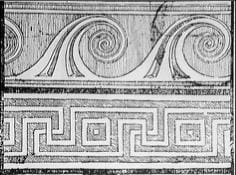

For the Greek theoreticians, number was a collection of units. This definition was linked to that of quantity, which according to Aristotle is "that which is divisible into two or more aliquot parts". The existence of two types of quantity, called discrete and continuous, gave rise to two distinct mathematical disciplines: arithmetic (the study of numbers) and geometry (the study of magnitudes).
These mathematical principles, founded on philosophical arguments about the essential indivisibility of the natural unit, would remain operational in the West until the 16th century. The mathematician Simon Stévin (1548-1620) was the first to question them in a radical way. He asserted that number includes all quantities, whether continuous or discrete. In doing so he laid the foundations of a modern arithmetic necessary for scientific progress but at the same time demolished a representation of the human being, its form and its measurements that had remained more or less unchanged since the Greco-Roman era.

Frieze of Greek keys and volutes. These schemes,
derived from Antiquity,were long used to draw the scrolls of musical instruments.
(Traité de Lutherie, pp. 217-220)
At the time Stévin was formulating his theories, craftsmen were still using mathematical tools inherited from the ancient Greeks. The measurements of an object derived from a series of relations based on a reference dimension drawn from the object itself.